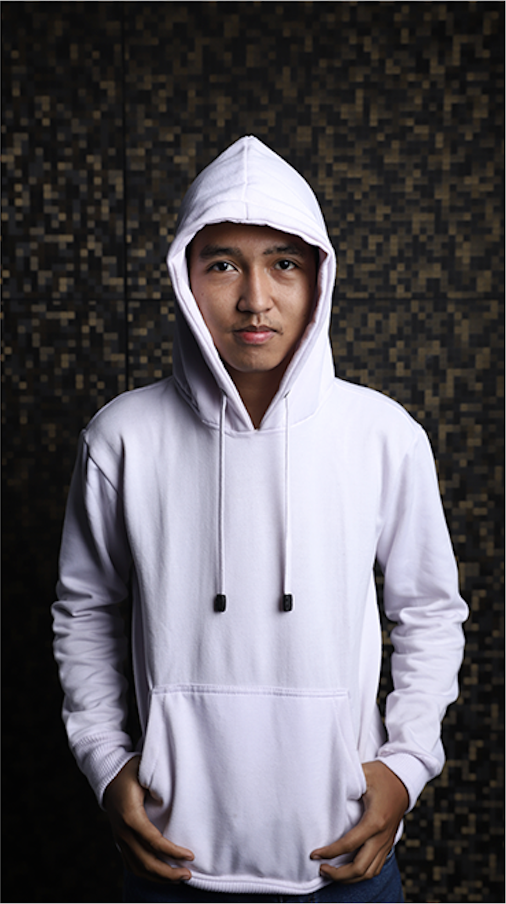
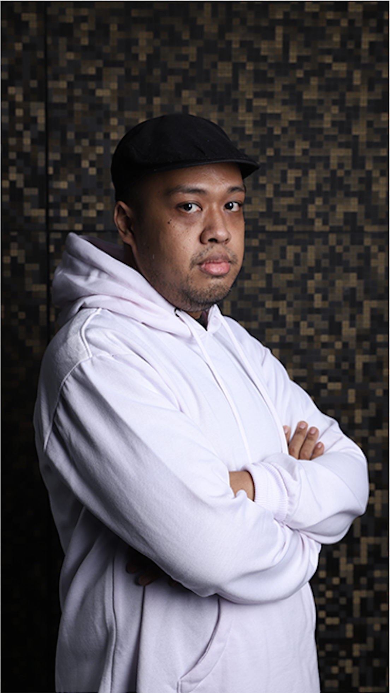

nama
: yurico andrean
nickname
: riecoo
genre game favorit
: adventure, survival, crafting, sandbox
awal kenal game itu dari counter strikes, setelah itu beralih ke point blank, lanjut delta black hawk down dan black dan kenapa gw udah gak main game kompetisi lagi ya karena udah terlalu bosen berkompetisi dengan player lain, saat ini hanya ingin bermain santai dan juga menikmati game lebih dalam lagi

nama
: hutomo dwinugrahanto
nickname
: tomo
genre game favorit
: jrpg, puzzle, action adventure, fighting
"awalnya main game golden axe dan sonic di sega, lalu penasaran game-game lain, sampai mencoba konsol nitendo jadul seperti mario bros dan yie ar kungfu. sejak saat itulah makin tertarik dengan video game, sampai saat ini. untuk jrpg, awal tertarik karena main game chrono trigger di snes, berlajut ke super mario rpg, sampai sekarang masih suka bermain game jrpg seperti dragon quest xi"